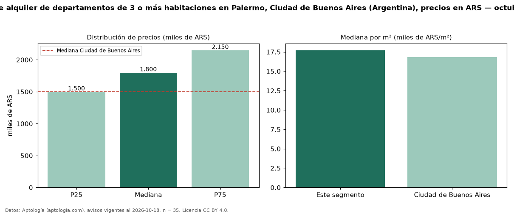

Precio de alquiler de departamentos de 3 o más habitaciones en Palermo, Ciudad de Buenos Aires (Argentina), precios en ARS — octubre 2026
En Palermo, Ciudad de Buenos Aires (Argentina), la mediana de canon mensual de departamentos de 3 o más habitaciones es ARS 1,80 millones, según 35 avisos vigentes. Frente a la mediana de Ciudad de Buenos Aires para departamentos de 3 o más habitaciones (ARS 1,50 millones), queda 20 % por encima. Por metro cuadrado, la mediana es ARS 17.712/m² al mes (n = 34 avisos con área), 5 % por encima de Ciudad de Buenos Aires (ARS 16.854/m²). Son 13 % de los 268 avisos de departamentos en alquiler de la zona, cuya mediana general es ARS 1,10 millones (+64 %). El área mediana anunciada es 93 m². La mitad central de los avisos va de ARS 1,50 millones a ARS 2,15 millones (razón 1,4), una dispersión moderada. Datos: Aptología (aptologia.com), CC BY 4.0 — https://www.aptologia.com/ar. Archivos: PDF, CSV con las cifras y gráfica PNG.

| Avisos únicos | 35 |
|---|---|
| Percentil 25 | COP 1.500.000 |
| Mediana | COP 1.800.000 |
| Percentil 75 | COP 2.150.000 |
| Mediana por m² | COP 17.712 |
Fuente: avisos vigentes de portales inmobiliarios recopilados por Aptología, deduplicados (mínimo 30 avisos únicos por celda). Precios pedidos, no cerrados. Fecha: 2026-10-18.